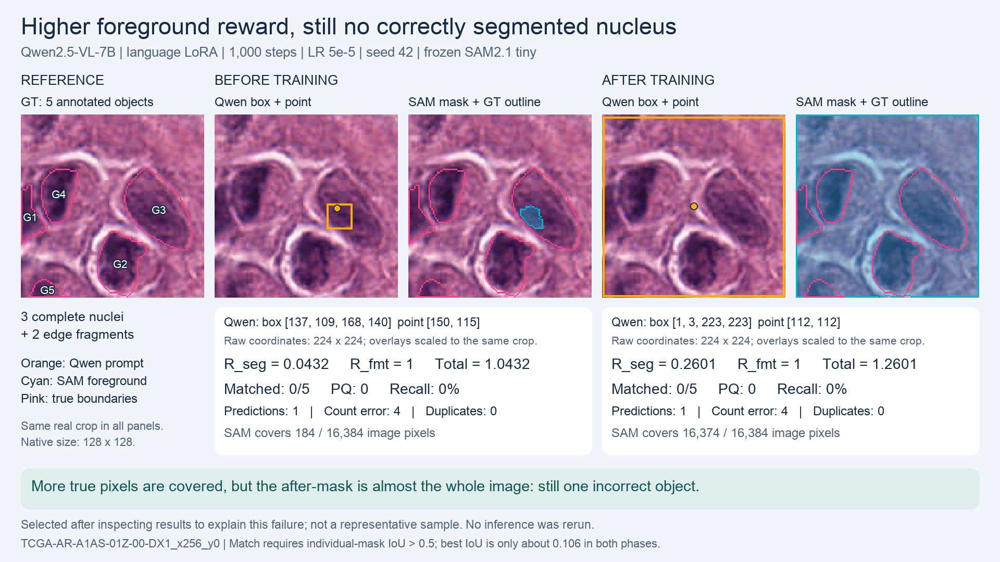

Same real validation crop, same frozen SAM. Qwen2.5-VL-7B before / after 1,000 LoRA GRPO steps.

Slide PNG (1920 x 1080) · Full explanation · Verified data · Original crop · Full64 report
Before: one tiny mask inside a nucleus, covering 184 pixels. After: one mask covers 99.94% of the image, including all five annotated objects and 12,115 background pixels.
The foreground overlap score rises from 184 / 4,259 to 4,259 / 16,374. It penalizes background, but the large region still outperforms the initial fragment. No individual nucleus passes IoU > 0.5, so instance recall and PQ stay zero. The after point is on background, although its coordinates are format-valid.
| Per-crop metric | Before | After |
|---|---|---|
| R_seg | 0.043203 | 0.260107 |
| R_fmt | 1 | 1 |
| Total reward | 1.043203 | 1.260107 |
| Matched / GT | 0 / 5 | 0 / 5 |
| PQ / recall | 0 / 0 | 0 / 0 |
| Predicted objects | 1 | 1 |
| Count error | 4 | 4 |
| Duplicate extras | 0 | 0 |
Numbers use the 224 x 224 processed frame; overlays are scaled to the same native 128 x 128 crop.
<answer>{"objects":[{"box":[137,109,168,140],"point":[150,115]}]}</answer><answer>{"objects":[{"box":[1,3,223,223],"point":[112,112]}]}</answer>Post-hoc illustrative selection: first lexicographic validation ID with at least three complete nuclei, valid answers in both phases, one predicted instance and zero matched instances in both phases, and increased foreground IoU. This is a case explanation, not a representative sample or a new experiment. There are 15 qualifying cases. This crop has three complete nuclei and two edge fragments; both fragments count as annotated instances.
This case was selected to explain a reward increase. The separate, original fixed multi-nucleus example has a reward decrease and is preserved in the parent report. Cohort summaries and raw experimental evidence are unchanged. No model was rerun.